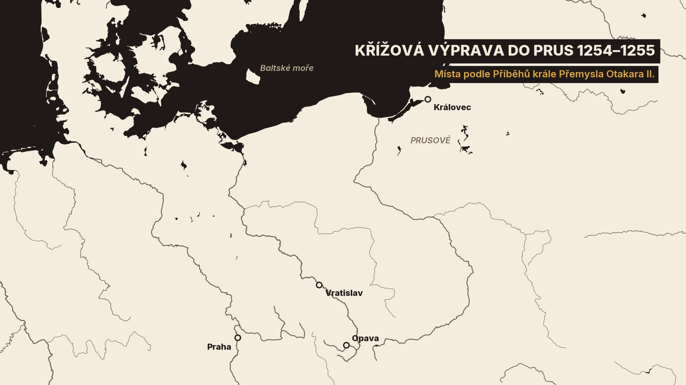
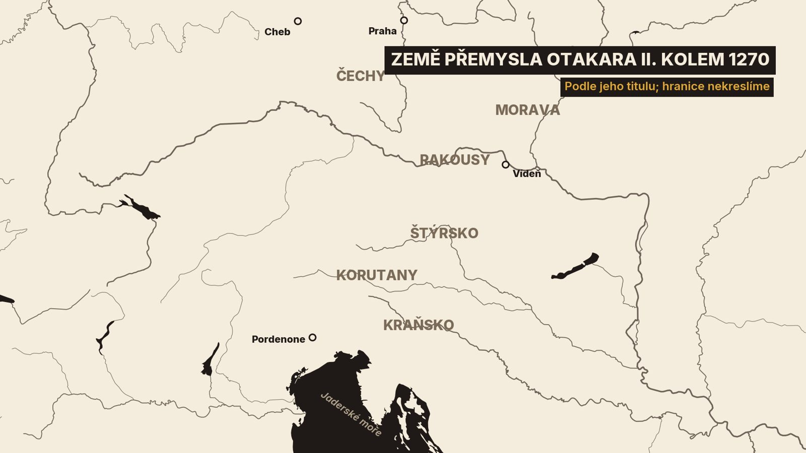
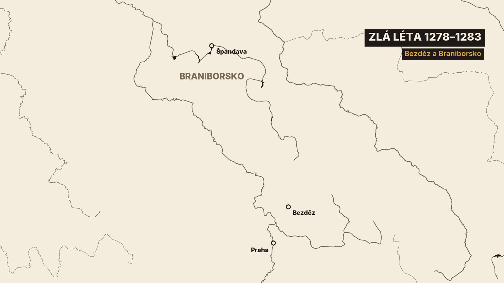
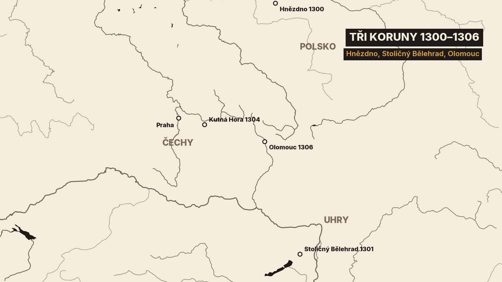

1. Prázdná tumba
V prosinci 1976 otevřela odborná komise ve Svatovítské katedrále hrob krále Přemysla Otakara Druhého. Kamenná tumba, kterou pro něj skoro o sto let později vytesala Parléřova huť, byla uvnitř prázdná. Teprve pod podlahou našli malou komoru a v ní nezdobenou dubovou truhlu.[11]
Ležely v ní kosti, svazek vzácných polohedvábných látek a pohřební insignie. Na lebce koruna vystřižená ze stříbrného pozlaceného plechu, vedle žezlo a jablko. A mezi čelistmi olověná destička s nápisem.[11][12]
Na lebce byla i rána. Podle antropologa Emanuela Vlčka ji způsobila sečná zbraň, nejspíš bojová sekera. Úder prý přišel shora, když král ležel, nebo klečel. Je to ale jeho výklad, lebku musel nejdřív složit z úlomků.[11][12]
Ten král zemřel v bitvě, kterou prohrál. Přitom ještě pár let předtím vládl od Krkonoš až k moři. Pražský současník o něm napsal, že byl už „z lůna matky“ povolán být králem zlatým. A mnich v německém Erfurtu, který psal asi třináct let po jeho smrti, zaznamenal, že ho i Tataři nazývali železným králem.[27] Odtud král železný a zlatý.[1][27]
I mezi Tatary ho nazývali železným králem.
Dnešní díl je o posledních Přemyslovcích na českém trůnu. Začneme rokem 1253. Uvidíme říši, která sahala k Jadranu, a bitvu, ve které se zhroutila. Pak přijdou zlá léta hladu, mocný Záviš, stříbro z Kutné Hory a nový groš. A skončíme nožem v Olomouci roku 1306.[1][2]
2. Dědic Babenberků a křižák
Přemysl Otakar se narodil roku 1232, možná 1233. Českým králem se stal po otci roku 1253. To už ale vládl i v Rakousích. Rakouští páni si ho zvolili za pána a on si vzal Markétu z vymřelého rodu Babenberků, vdovu po římském králi. Byla výrazně starší než on.[2][4]
Rakousy byly bohaté. Letopisec zapsal, že se král roku 1254 vrátil s truhlou plnou darů. Klerici na dvoře jí říkali Noemova archa. Ve stejném roce ale byla v Čechách neúroda a nouze, „jaké nepamatuje věk náš“.[1]
V prosinci vytáhl Otakar „opásán znamením kříže“ na sever, proti pohanským Prusům. Byla to křížová výprava. Vojsko podle letopisce plenilo a nešetřilo „žádného pohlaví ani věku“.[1]
Pruští předáci se podrobili a dali se pokřtít. Otakar šel za kmotra tomu nejmocnějšímu a dal mu své jméno. Kmotři pak novokřtěncům darovali své šaty. Pak křižáci přišli k jedné hoře, nazvali ji horou královskou a postavili na ní hradiště. Podle historiků z té výpravy vzešel Královec, německy Königsberg, pojmenovaný po českém králi.[1][4]

Doma zatím král přestavoval Prahu. Roku 1257 podle letopisce „zapudil Čechy z podhradí a vsadil cizozemce“. Pod Hradem vzniklo nové město, dnešní Malá Strana, a dostalo kamenné hradby.[1][18]
Kus té hradby odkryli archeologové v Thunovské ulici roku 2014. Byla silná skoro dva metry a možná se dochovala až do výšky 8 metrů. Hradba zůstala zachovaná, jen zmizela za zdmi přestavěného domu. Vyzděný příkop před ní ale úřady dovolily zbořit. Podle archeologů je takové povolení ve střední Evropě ojedinělé.[18]
3. Řeka jako Rudé moře
Rakousy a Štýrsko chtěl i uherský král Béla Čtvrtý. Spor vyvrcholil v létě 1260 u Kressenbrunnu, na Moravském poli nedaleko Vídně.[1][4]
O bitvě víme hlavně z listu, který Otakar sám poslal papeži. Je to tedy zpráva vítěze. Tábory dělila řeka Morava. Mezi nepřáteli král vyjmenovává Kumány, Uhry, Sékely, Valachy, Bulhary i „Bosňany kacířské“.[1]

Obě strany se dohodly na příměří. Uhři ale v noci tajně přešli brody. V českém táboře podle krále zůstala „sotva desátá část“ vojska, ostatní odešli pryč. Nepřítel je obklíčil do půlkruhu.[1]
A přesto Češi zvítězili. Řeka Morava byla pro prchající podle krále „jako moře červené Egypťanům“. Někteří se prý dostali přes řeku „přes mrtvoly lidí a koňů jako přes mosty“.[1]
Řeka Morava byla jim jako moře červené Egypťanům.
Bojovalo se 12., možná 13. července. Béla se pak vzdal Štýrska. Pražský kronikář k bitvě přidal i zázrak. Jeden rytíř prý ve vidění spatřil svatého Václava, Vojtěcha a Prokopa, jak spěchají českému vojsku na pomoc. Je to zbožné vyprávění, ne zpráva z bojiště.[1][4]
Pak se změnil králův život. V říjnu 1261 odjela královna Markéta do Rakous, „z jakých příčin, Bůh ví“, napsal letopisec. Zbraslavská kronika to vysvětluje. Neměli děti, a tak se s ní král se souhlasem papeže rozvedl.[1][2][4]
Ještě týž měsíc se Otakar oženil s Kunhutou, vnučkou svého poraženého soupeře Bély. O Vánocích je oba v Praze korunoval mohučský arcibiskup. Hostina trvala dva dny na Letné, v budovách postavených jen pro tu slavnost.[1]
4. Král zlatý
Roku 1264 se u Prešpurku, dnešní Bratislavy, konala svatba. Otakarova neteř si brala syna uherského krále. Otakar kvůli ní dal postavit přes Dunaj most na velkých lodích. Uherský král přijel se zlatými řetízky, které mu visely u spánků. A nevěstě podle uherského zvyku sňal korunu z hlavy jeden šlechtic tasným mečem.[1]
Právě u téhle svatby píše současný pražský duchovní o Otakarovi, že „z lůna matky své jmenován byl králem zlatým“. A v posmrtné chvále o něm píše, že se mezi králi od východu slunce až k západu nenašel nikdo tak štědrý.[1]
…který z lůna matky své jmenován byl králem zlatým.
Roku 1269 získal ještě Korutany a Kraňsko. Zbraslavská kronika o něm píše, že „rozprostřel své ratolesti až k moři“. Podle německé biografie ovládal asi čtvrt století největší souvislé panství ve střední Evropě.[2][4]

A zakládal města. Podle téže biografie jich založil nebo povýšil přes padesát. Patří k nim Písek, Polička, Uherské Hradiště i rakouský Marchegg. Do měst zval cizince, často německy mluvící řemeslníky a osadníky, a dával jim výsady. Židům potvrdil práva zvláštním privilegiem.[4][25]
Na jihu Čech vyměřil purkrabí Hirzo kolem roku 1265 nové město na soutoku Malše a Vltavy. České Budějovice dostaly náměstí 133 krát 137 metrů. Archeologové na nádvoří dnešní radnice našli jejich nejstarší stopy: kůlové jamky, odpadní jámy a tři malé sklípky.[8][19]
Na jihu Čech založil král roku 1263 cisterciácký klášter Zlatá Koruna. Šlechta ale zakládala také. Mocný rod Vítkovců měl od roku 1259 vlastní klášter ve Vyšším Brodě.[2][4][9][10]
Král myslel i na všední věci. Roku 1268 dal ve všech vesnicích kopat jámy na vlky. Jako návnada sloužila husa nebo sele. A kázal obnovit váhy a míry a označit je svým znakem.[1]
5. Pět praporců
Otakar se několikrát objevil mezi kandidáty na římskou korunu. Příběhy krále Přemysla dokonce tvrdí, že mu ji roku 1271 nabídli kurfiřti a on odmítl. Jestli to tak bylo, nevíme jistě.[1][4]
Roku 1273 zvolili kurfiřti bez českého krále Rudolfa Habsburského. Otakar ho neuznal a o potvrzení svých zemí nepožádal. Přišla říšská klatba, pak exkomunikace a nakonec válka.[4]
Kronikář vložil Otakarovi do úst hrdou odpověď. Země, které Rudolf žádá, prý nikdy neměl. Některé dostal věnem a některých „nabyl rukou vítěznou a mečem“.[1]
Některých také nabyl jsem rukou vítěznou a mečem.
Roku 1276 ale přišla rána zevnitř. Vítkovci podle letopisce „s velikou mocí válečnou odpadli od krále“, právě když je nejvíc potřeboval. Proti králi povstala i další šlechta. České vojsko zatím u rakouského Drosendorfu sedm týdnů hladovělo.[1][4]
V listopadu 1276 se Otakar vzdal Rakous, Štýrska, Korutan, Kraňska i Chebu. Na znamení podřízenosti odevzdal Rudolfovi pět praporců. Rudolf mu vrátil dva, za Čechy a Moravu. Ty mu udělil v léno.[1][4]
Mír měl zpečetit dvojí sňatek. Otakarův syn Václav si měl vzít Rudolfovu dceru Gutu a Rudolfův syn Otakarovu dceru. Klid ale nevydržel. Otakar se chystal na odvetu. Letopisec zaznamenal i zlé znamení. Před Pražským hradem se prý shromáždilo nesmírné množství vlků a vyli.[1][4]
6. Moravské pole
27. června 1278 vytáhl král na Moravu. Proti němu stál Rudolf a s ním uherský král s Kumány.[1]
Rozhodlo se 26. srpna 1278 mezi obcemi Dürnkrut a Jedenspeigen na Moravském poli. Kousek od místa, kde Otakar před osmnácti lety zvítězil. Německá biografie tu bitvu řadí k největším rytířským bitvám Evropy. Rozhodl útok oddílu těžké jízdy, který měl Rudolf v záloze.[4]

Rakouská Rýmovaná kronika, sepsaná o dvacet a více let později, to líčí barvitě. Záloha prý prorazila řady „jako krejčí nůžkami sukno“. Otakar poslal pro vlastní zálohu pana Milotu. Ten si ale vzpomněl, že mu král upálil bratra, a odjel s ní pryč. Ostatní prameny, které jsme četli, o téhle zradě mlčí.[3]
Zbraslavská kronika to vidí jinak. Mnozí Češi prý „jako zloději“ utekli a krále, který statečně bojoval uprostřed nepřátel, opustili.[2]
A jak král zemřel? Současný pražský autor poctivě přiznává, že nic jistého neví. Prý mezi vojsky zmizel a víc se neukázal. Zbraslavská kronika píše, že ho zajali a rychle zabili.[1][2]
O zahynutí pak krále Otakara ničeho jistého pověděti neumíme.
Rýmovaná kronika toho naopak ví až příliš. Krále prý srazili z koně a on prosil o život. Rytíř Siegfried z Merenbergu mu odpověděl: „Zaplaťte mi strýce.“ A bodl ho. Pacholci pak mrtvého krále svlékli a nahý ležel na zemi. Přikryli ho pláštěm cizího pacholka.[3]
Italský současník Tomáš Toskánský zapsal, že tělo poznali podle šatů. Jedna rána mu vyrazila oko, druhá rozťala lebku. To se dobře shoduje s ranou, kterou o sedm set let později viděl na lebce antropolog.[12]
Tělo nabalzamovali a vystavili ve Vídni. Bez královských poct, protože byl v klatbě. Pak ho převezli ke znojemským minoritům. Do Prahy se vrátilo až za jeho syna, v letech 1296 až 1297.[11][2]
Ó kolo štěstěny, kolo vrtkavé jako kolo luny.
7. Zlá léta
Otakarovu synovi Václavovi ještě nebylo ani sedm let. Rudolf svěřil Čechy na pět let do poručnictví markraběti Otovi Braniborskému. Moravu si nechal.[2][5]
Ota dal královnu Kunhutu a malého Václava v noci, ve spánku, naložit na vůz a odvézt na hrad Bezděz. Hlídali je Němci a k nim pustili sotva tři Čechy. Královna si pak vyprosila cestu k pohřbu manžela a utekla. Pražský autor k tomu poznamenal, že „někdy lži jsou prospěšné“.[1]
Václava odvezli do Braniborska. Zbraslavská kronika vypráví, že tam trpěl hladem a chodil v roztrhaných botách. Neměl prý ani peníz, aby je spravil.[2]

V Čechách zatím Otovi lidé hledali poklady. V lednu 1279 vyloupili poklad pražského kostela a prohledávali i hrob svatého Václava.[1]
Ó peníze, všeho zlého králové!
Země se bránila. O Vánocích 1280 rozhodl sněm, že cizí Němci musí do tří dnů odejít. Podle kronikáře „jak dým zmizeli“. A „pacholek začal pracovati pluhem, kovář v kovárně“.[1]
Pak ale přišel hlad. Současník zapsal, že se za peníz daly koupit sotva dvě vejce. Pamatoval přitom doby, kdy jich bylo padesát. Rok 1282 nazval rokem velkého hladu. Řemeslníci, kteří dřív měli jmění, žebrali.[1]
Pražští konšelé najali hrobaře. Podle autora vykopali osm jam a do každé se vešlo kolem tisíce těl. Naplnily se za šest měsíců. A to byla Praha podle něj „ani třicátou částí“ království.[1]
Ota si propuštění Václava dal dobře zaplatit, nakonec ještě dvaceti tisíci hřivnami stříbra a zástavou hradů. 24. května 1283 se jedenáctiletý král vrátil do Prahy. Lidé ho vítali písní Hospodine, pomiluj ny.[1][2]
8. Záviš
Královna Kunhuta se mezitím sblížila se Závišem z Falkenštejna. Pocházel z rodu Vítkovců a Otakar ho kdysi vyhnal ze země. Zbraslavská kronika jeho úspěch u královny přičítá „kouzelnickým klamům“. Kronikář ale Záviše nenáviděl.[2]
Narodil se jim syn Jan. Když se Václav vrátil, stal se Záviš nejmocnějším mužem v zemi. „Když král mlčí, mluví on,“ napsal o něm kronikář. S Kunhutou se oženil roku 1284, možná 1285. V září 1285 královna zemřela.[2][5]
Ve Vyšším Brodě, v rodovém klášteře Vítkovců, se dodnes uchovává zlatý dvouramenný kříž, kterému se říká Závišův. Váží přes čtyři kila a pod křišťálem skrývá ostatek Kristova kříže. Klášter ho dostal nejspíš v osmdesátých letech. Odkud pochází, se odborníci přou. Nejčastěji se mluví o Uhrách, jisté to ale není.[16]
Kronikář tvrdí, že Záviš chtěl krále zabít. Je to obvinění nepřátelského autora. Zbraslav byla Václavova fundace.[2]
Kolem přelomu let 1288 a 1289 si Václav Záviše pozval do Prahy a na Hradě ho dal zajmout. Vojsko pak s ním táhlo k Hluboké. Obránci hrad nevydali. A tak Záviše sťali v podhradí, před zraky jeho bratří. Podle vyšebrodského záznamu se to stalo 24. srpna 1290. Pohřbili ho ve Vyšším Brodě.[2][5][10][16]
9. Stříbrný král
Václav Druhý byl jiný než otec. Podle zbraslavského kronikáře se bál bouřky. Dal si udělat dutý oltář a za bouřky se do něj schovával, zatímco mu učený muž u vchodu předčítal z Písma. A nesnášel kočky, nesnesl ani pohled na ně.[2]
Chtěl vládnout podle psaného práva. Z Itálie si povolal znalce práva Gozza z Orvieta, šlechta se ale postavila proti. Stejně dopadla univerzita, kterou chtěl založit v Praze.[2]
Roku 1292 založil na Zbraslavi klášter a nazval ho Aula Regia, Královský dvůr. Roku 1297 se dal korunovat. Podle kronikáře dostali hosté píci pro 191 000 koní. A z pramenů na Novém trhu teklo víno. Tohle číslo bude spíš nadsázka.[2]
Na to všechno měl. Měl totiž Kutnou Horu. Listina z roku 1289 řeší spor dvou měst o novou horu. Pověst říká, že stříbro našel sedlecký mnich, který na místě nechal svou kutnu. Zbraslavský kronikář ji nazval „troud lakoty a propast zloby“.[2][6][23]
Kutná Hora, troud lakoty a propast zloby.
Pod dnešní jezuitskou kolejí archeologové odkryli šachty, žlábky na vodu, nejspíš i místa, kde se prala ruda, a koleje vyjeté vozy do podloží. Těžilo se tam od konce třináctého století.[21]
A pak přišla reforma. „Léta Páně 1300 v měsíci červenci,“ píše kronika, „byla zavedena mince pražských grošů a malých peněz“. Dvanáct malých peněz se rovnalo jednomu groši. Reformu připravili tři muži z Florencie.[2][13]
Na líci groše je česká koruna a jméno krále Václava Druhého, na rubu český lev a nápis GROSSI PRAGENSES. Vzorem byl francouzský groš z Tours. A pražský groš pak skoro čtvrt tisíciletí ovlivňoval obchod ve střední Evropě. Kronikář si posteskl, že groš mnozí mají „téměř za boha“.[2][7][13][14]
Ke stříbru patřil i nový horní zákoník, Ius regale montanorum. Vznikl mezi lety 1300 a 1305 a zakazoval stříbro volně prodávat a vyvážet. Kdo ho vytěžil, musel ho vyměnit za groše.[6]
10. Tři koruny a nůž v Olomouci
Stříbro přineslo i koruny. V létě 1300 byl Václav v Hnězdně korunován polským králem. Poláci a Češi se podle kronikáře „příliš neliší v řeči slovanské“. A o rok později dostal uherskou korunu jeho syn, také Václav. Uhrům vládl pod jménem Ladislav.[2][5]

Soused se ale bál. Římský král Albrecht Habsburský žádal Kutnou Horu. Když ji nedostal, přitáhl k ní na podzim 1304. Horníci podle kroniky pustili do potoka, ze kterého pil jeho tábor, stříbrnou strusku. Vojsko pak odtáhlo, sužované hladem, nemocí a zimou.[2]
Žíznili po stříbře, napili se stříbrné strusky.
Václav Druhý zemřel 21. června 1305 po dlouhé nemoci. Bylo mu třicet tři let. Hrad tehdy vyhořel, a tak umíral v domě zlatníka Konráda. Byl to nejspíš týž Konrád, kterého prameny uvádějí mezi prvními mincíři grošů.[2][13]
Jeho syn byl ještě mladík. Byl to „král tří království“ a mluvil čtyřmi jazyky: latinsky, německy, maďarsky a česky. Kronikář si ale stěžuje, že pil se šlechtici a v opilosti jim rozdával listiny. Nazval je slovní hříčkou „privilegia, či spíše pravilegia“. Latinské pravus znamená křivý, takže to podle něj nebyly výsady, ale spíš křivé listiny. Král kvůli nim ještě v kronikářově době přicházel o statky.[2]
Tato privilegia, či spíše pravilegia, dodnes připravují krále o mnoho statků.
Uher se Václav Třetí vzdal a v létě 1306 táhl do Polska. Cestou se zastavil v Olomouci. Bydlel v domě děkana na hradě. 4. srpna, v létě, aby se ochladil, byl sám v paláci, jen v košili a plášti. Tam dostal tři smrtelné rány. Bylo mu šestnáct let.[2][24]
Z paláce prý vyběhl rytíř Konrád z Botensteinu s krvavým nožem. Hned ho chytili a zabili, dřív než mohl promluvit. Zbraslavský kronikář přiznal: „Zda on, nebo jiný je vinen, nevím, Bůh ví.“[2]
Václav Třetí byl posledním mužem z rodu Přemyslovců. Jeho tělo později převezli na Zbraslav, kde husité roku 1420 rozbili královské hroby. Lebka, kterou tam dlouho považovali za jeho, mu podle novějšího výkladu nejspíš nepatří.[2][17][24]
Kdo tedy zabil posledního Přemyslovce? A kdo za ním stál? To nevíme dodnes. Česká koruna zůstala bez krále. V příštím díle uvidíme, kdo si ji vezme, a jak z toho vzejde Karel Čtvrtý.

_retouched.jpg){kind=link}


.jpg){kind=link}


.jpg){kind=link}


.jpg){kind=link}


.jpg){kind=link}
,_by_V%C3%A1clav_Bro%C5%BE%C3%ADk.jpg){kind=link}
.jpg){kind=link}


.jpg){kind=link}
.jpg){kind=link}


.jpg){kind=link}
_k%C5%99%C3%AD%C5%BE_(1748).jpg){kind=link}


.png){kind=link}

.png){kind=link}

.png){kind=link}


_in_Kutna_Hora_(26350617255).jpg){kind=link}
_(25747576953).jpg){kind=link}


.jpg){kind=link}